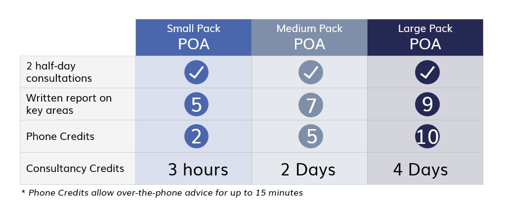
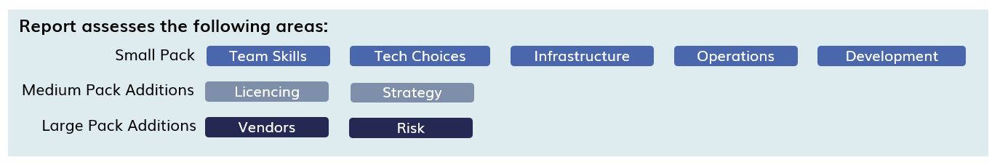

- Available when you need us
- Cover any aspect of technology
- No retainer fees
- Discount for pre-purchasing
Other Professional Services
From time to time your company will need the assistance of a professional such a lawyer, tax advisor, accountant or auditor. If your company is large enough then you can retain these services internally but if you don't need them full time then there are many companies who can provide someone to help you.
Typically you get assigned someone who has worked with you before and knows your business, so you don't need to explain everything from scratch each time you deal with them. They charge a rate based upon how much you use and when you don't need them, you don't pay.
It's a model that is well established and proven to work.
Not so with Technology
Technology is one of the least advanced professional services in this respect.Unfortunately with IT, things don't work so well. You can get very skilled technicians who can fix your network or upgrade your PC...
..but sometimes you need something more advanced.
This is when you find that there is a big gap between contract technicians and the big end of town where the major consultancy firms operate.
Experiences with large consulting firms vary a lot but it often seems that they are much more interested in growing their business than they are in
helping you with yours.
This leaves you either needing to hire someone full time when you don't really want to, or struggling away on your own and borrowing advice from friends.
There is a good reason for this, most of the senior staff are employed as CIOs at other companies or are working for the consulting firms.
Target Audience
This offering is aimed at companies who need occasional help with their technology. Typically they will have a functioning set of technology and a capable internal or outsourced IT function, but need more senior assistance with technology decisions or transitions.
Options
Inclusions
Our initial engagement includes up to 2 half-day onsite consultations with you and your teams to allow us to understand your environment and the issues that you face.
After the consultations we produce a written report on your IT environment which covers a number of key areas.
Ongoing Support
After the initial assessment, we provide ongoing support at a fixed hourly rate with discounts for full days or pre-purchased blocks of time. We also include phone credits for those quick questions that you need answered now.Contact Us
For our Virtual CIO or any other services, Contact Us today, or download our brochure 17 Ways Professional Business Consulting Pack.pdf